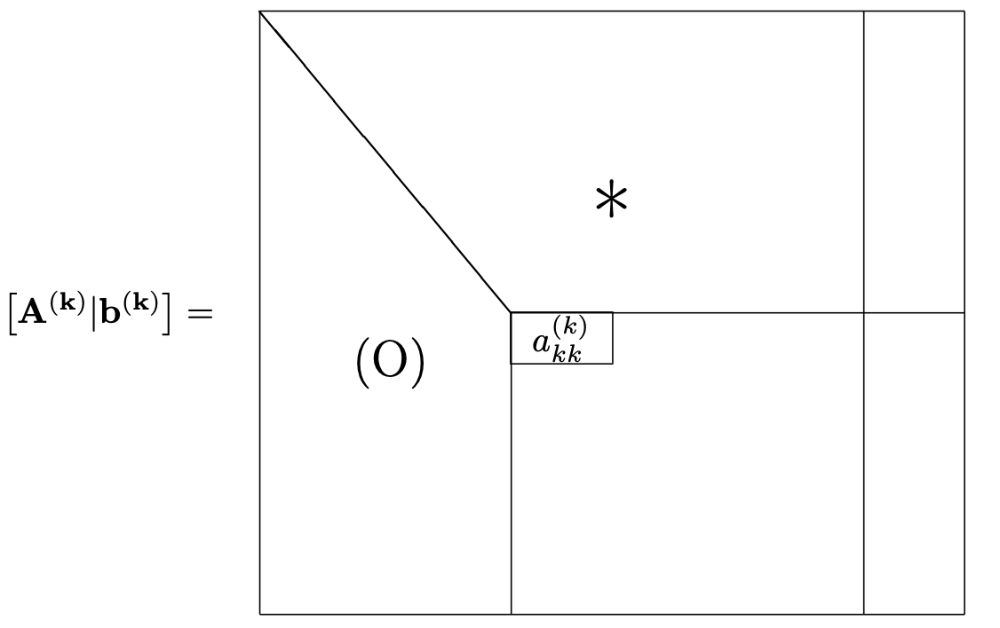

Elimination de Gauss
Contents
Elimination de Gauss#
Exemple introductif#
Soit le système de 3 équations à 3 inconnues
\(\left \{\begin{eqnarray} 2x_1-3x_2\phantom{-3x_3}&=& 3\label{SL1}\\ 4x_1-5x_2+x_3& =& 7\label{SL2}\\ 2x_1-x_2-3x_3& =& 5\label{SL3} \end{eqnarray}\right .\)
La méthode d’élimination de Gauss (ou méthode du pivot) consiste à utiliser la première équation pour calculer \(x_1\) en fonction des autres variables puis de remplacer cette variable dans les équations suivantes. Cette élimination se poursuit avec \(x_2\) dans les nouvelles équations (sauf la première) jusqu’à l’obtention d’une équation à une seule inconnue. On remonte alors en remplaçant les variables calculées dans les équations ayant servi à l’élimination.
Tirons \(x_1\) de la première équation :
\(\begin{equation}x_1=\frac{3}{2}(1+x_2) \label{VarX}\end{equation}\)
Remplaçons \(x_1\) dans les deux dernières équations par son expression
\(\left \{\begin{eqnarray} x_2+x_3 &=& 1 \label{SLR1}\\ 2x_2-3x_3 &=& 2\label{SLR2}. \end{eqnarray}\right .\)
Tirons \(x_2\) de ce nouveau système
\(\begin{equation}x_2=1-x_3. \label{VarY}\end{equation}\)
Remplaçons \(x_2\) dans la seconde équation:
\(\begin{equation}-5x_3=0.\label{VarZ}\end{equation}\)
La phase d’élimination est terminée. On effectue alors la substitution en sens inverse des variables :
\(\left \{\begin{eqnarray*} x_3=0\\ x_2=1\\ x_1=3 \end{eqnarray*}\right .\)
On remarque qu’à une étape donnée, l’élimination d’une variable peut se faire dans n’importe quelle équation, à condition, bien sûr, que cette équation contienne la variable en question.
Systèmes triangulaires#
On constatera au paragraphe suivant que la phase d’élimination consiste à transformer le système original en un système triangulaire. Un système triangulaire est un système dont la matrice est triangulaire.
Un système triangulaire supérieur se résout par substitution inverse
On supposera pour l’instant tous les éléments diagonaux \(a_{ii}\) non nuls.
\(\left \{\begin{eqnarray*} a_{11}x_1+a_{12}x_2+\cdots+a_{1n}x_n&=&b_1\\ a_{2n}x_2+\cdots+a_{2n}x_n &=& b_2\\ \vdots & & \vdots\\ a_{nn}x_n&=&b_n \end{eqnarray*}\right .\)
On commence d’abord par calculer \(x_n\) dans l’équation \(n\). Puis à l’aide de \(x_n\), on peut calculer \(x_{n-1}\) dans l’équation \(n-1\) et ainsi de suite jusqu’à \(x_1\) :
\(\left \{\begin{eqnarray} x_n &=& \frac{b_n}{a_{nn}},\label{BckSub1}\\[.35pc] x_{k}&=&\frac{1}{a_{kk}}\left[b_k-\sum_{j=k+1}^na_{kj}x_j\right],\quad k\in[\![n-1, 1]\!]\label{BckSub2} \end{eqnarray}\right .\)
On remarque que le calcul de \(x_k\) coûte \(n-k\) flops et une division. Le coût total de l’algorithme est donc de \(1+2+\cdots+n-1=\frac{n(n-1)}{2}\), soit (on ne garde que les termes de plus haut degré) \(\frac{{n^2}}{ 2}\) et \(n\) divisions.
import numpy as np
def SubstitutionInverse(A,b):
n = A.shape[0]
x = np.zeros((n,1))
for i in range(n-1,-1,-1):
x[i] = b[i]
for j in range(i+1,n):
x[i] -= A[i][j]*x[j]
if (A[i][i] != 0):
x[i] /= A[i][i]
else:
print("Le coefficient en position ",i," de A est nul.")
return x
Dans le cas d’un système triangulaire inférieur, on effectue des substitutions directes :
\(\left \{\begin{eqnarray} x_1 &=& \frac{b_1}{a_{11}},\label{FwdSub1}\\[.35pc] x_{k}&=&\frac{1}{a_{kk}}\left[b_k-\sum_{j=1}^{k-1}a_{kj}x_j\right],\quad k\in[\![2, n]\!].\label{FwdSub2} \end{eqnarray}\right .\)
Le coût de l’algorithme de substitution directe est le même que celui de substitution inverse.
Méthode de Gauss (ou du pivot) pour les systèmes linéaires#
Montrons d’abord que la technique d’élimination correspond à une opération de pivotage.
Eliminer \(x_1\) de la seconde équation revient à faire la somme de la première équation multipliée par -2 avec la seconde. De même éliminer \(x_1\) de la troisième équation revient à faire la somme de la premièr multipliée par -1 avec la troisième. On a donc effectué un pivotage de la première colonne (celle de \(x_1\)) en utilisant la première ligne comme ligne du pivot.
Remark 4
Lors de l’exécution de l’algorithme :
A chaque itération, l’élément de la colonne dans la ligne du pivot doit être non nul.
Les transformations élémentaires effectuées sur la matrice sont effectuées en parallèle sur le second membre. 3/ A la fin de l’élimination (si tout se passe bien!), on obtient un système triangulaire avec les pivots sur la diagonale.
Example 3
Les transformations successives sont décrites ci-dessous pour l’exemple du paragraphe précédent.
Itération 1 :
\( \left(\begin{array}{rrr} 1 & & \\ -2& 1& \\ -1 & & 1 \end{array}\right) \left(\begin{array}{rrr|r} (2)& -3 & 0 & 3\\ 4 & -5 & 1 & 7\\ 2 & -1 & -3 & 5\\ \end{array} \right) =\left(\begin{array}{rrr|r} 2& -3 & 0 & 3\\ 0 & 1 & 1 & 1\\ 0 & 2 & -3 & 2\\ \end{array} \right) \)
Itération 2 :
\( \left(\begin{array}{rrr} 1 & & \\ & 1& \\ & -2 & 1 \end{array}\right) \left(\begin{array}{rrr|r} 2 & -3 & 0 & 3\\ 0 & (1) & 1 & 1\\ 0 & 2 & -3 & 2\\ \end{array} \right) =\left(\begin{array}{rrr|r} 2& -3 & 0 & 3\\ 0 & 1 & 1 & 1\\ 0 & 0 & -5 & 0\\ \end{array} \right) \)
On pose alors \( \begin{eqnarray*} {\bf A^{(1)}}&=&{\bf A}\\[.2pc] {\bf b^{(1)}}&=&{\bf b}. \end{eqnarray*}\)
Dans le cas général, on a donc à l’étape \(k\) de l’algorithme une matrice \({\bf A^{(k)}}\in\mathcal{M}_{n,n+1}(\mathbb R)\) (la dernière colonne représente le second membre du système transformé, notée \({\bf b^{(k)}}\)) dont les \(k-1\) premières colonnes sont triangulaires supérieures.

On met donc à zéro chaque élément de la colonne \(k\) sous le pivot \(a^{(k)}_{kk}\) (supposé non nul) en remplaçant la ligne \(i\) (pour \(i\in[\![k+1, n]\!]\)) par
L’élément \(a^{(k)}_{ij}\) pour \(i\in [\![k+1,n]\!]\) et \(j\in [\![k+1,n+1]\!]\) devient
La mise à jour de la ligne \(i\) requiert donc \(n-k+1\) flops et 1 division. Donc l’étape \(k\) coûte \((n-k)(n-k+1)\) flops et \(n-k\) divisions. On en déduit le coût total de l’algorithme de Gauss:
\(\begin{eqnarray*} n(n-1)+(n-1)(n-2)+\cdots+2\cdot 1&=&n^2+(n-1)^2+\cdots+2^2+1^2 -(n+n-1+\cdots+2+1)\\ &=&\frac{1}{6}n(n+1)(2n+1)-\frac{1}{2}n(n+1)\ \mbox{flops} \end{eqnarray*}\)
et \(\frac{1}{2}n(n+1)\) divisions.
On dira que la complexité de la méthode de Gauss est de \(\displaystyle{\frac{1}{3}{n^3}}\) flops.
L’algorithme d’élimination de Gauss est présenté dans l’algorithme Algorithm 2. Le second membre est stocké dans la dernière colonne de \({\bf A}\). L’élimination transforme la matrice \({\bf A}\) en une matrice triangulaire supérieure (étape 1). Le système triangulaire supérieur est ensuite résolu par substitution inverse (étape 2).
Algorithm 2 (Méthode de Gauss)
**Entrée : ** \({\bf A}\in\mathcal{M}_{n,n+1}(\mathbb R)\) (la dernière colonne représente le second membre du système)
**Sortie : ** Solution \({\bf x}\) du système \({\bf Ax}={\bf b}\)
étape 1. Elimination
Pour \(k=1,\ldots, n-1\)
Pour \(i=k+1,\ldots, n\)
Pour \(j=k+1,\ldots,n+1\)
\({a_{ij} \leftarrow a_{ij}-\frac{a_{ik}}{a_{kk}}a_{kj}}\)
étape 2. Résolution du système triangulaire
\(\displaystyle\sum{x_n\leftarrow \frac{a_{n,n+1}}{a_{nn}}}\)
Pour \(k=n-1,\ldots,1\)
\(x_k\leftarrow \frac{1}{a_{kk}}\left[ a_{k,n+1}-\sum_{j=k+1}^na_{kj}x_j \right]\)
Stratégies pour les pivots nuls#
Si le pivot est nul (en pratique, on évitera aussi les pivots de valeur absolue trop petite-), on le remplace en effectuant une permutation avec un élément non nul parmi les éléments sous lui et/ou à sa droite. On distingue généralement deux stratégies :
Pivotage total
On permute lignes et colonnes pour choisir le plus grand élément en valeur absolue dans la sous-matrice en bas à droite : \(\max\left\{\left|a^{(k)}_{ij}\right|\ ; \ i,j\in [\![k,n]\!]\right\}\)
Pivotage partiel
On ne permute que les lignes sous le pivot en choisissant le plus grand élément en valeur absolue : \(\max\left\{\left|a^{(k)}_{ik}\right|\ ; \ i\in [\![k,n]\!]\right\}\)
La stratégie du pivotage partiel est la plus utilisée car la plus économique (la recherche du plus grand élément sur une liste de \(p\) nombres coûte \(p\) comparaisons numériques, ce qui donne \(n^3/3\) comparaisons pour le pivotage total). L’algorithme d’élimination de Gauss avec recherche du pivot partiel est décrit dans l’algorithme Algorithm 3. Le second membre est stocké dans la dernière colonne de \({\bf A}\).
Algorithm 3 (Méthode de Gauss avec pivot partiel)
**Entrée : ** \({\bf A}\in\mathcal{M}_{n,n+1}(\mathbb R)\) (la dernière colonne représente le second membre du système)
**Sortie : ** Solution \({\bf x}\) du système \({\bf Ax}={\bf b}\)
étape 1. Elimination
Pour \(k=1,\ldots, n-1\)
\(c_p\leftarrow |a_{kk}|\)
\(i_p\leftarrow k\)
Pour \(i=k+1,\ldots, n\)
Si \( |a_{ik}|> c_p\)
\(c_p\leftarrow |a_{ik}|\)
\(i_p\leftarrow i\)
Si \(i_p\ne k\)
Pour \(i=k+1,\ldots, n\)
Pour \(j=k+1,\ldots,n+1\)
\(a_{ij} \leftarrow a_{ij}-\frac{a_{ik}}{a_{kk}}a_{kj}\)
étape 2. Résolution du système triangulaire
\(\displaystyle\sum{x_n\leftarrow \frac{a_{n,n+1}}{a_{nn}}}\)
Pour \(k=n-1,\ldots,1\)
\(x_k\leftarrow \frac{1}{a_{kk}}\left[ a_{k,n+1}-\sum_{j=k+1}^na_{kj}x_j \right]\)
Cas singulier et calcul du rang d’une matrice#
Pivotage total#
Si, à l’itération \(k\) de la méthode de Gauss avec pivot total, \(\max\left\{\left|a^{(k)}_{ij}\right|\ ; \ i,j\in [\![k,n]\!]\right\}=0\) (donc tous les éléments de la sous-matrice sont nuls), on peut affirmer que le rang de la matrice \({\bf A}\) est égal à \(k-1\). S’il existe un élément \(b^{(k)}_i\), \(k\le i\le n\), du second membre différent de zéro, alors le système n’a pas de solution.
Pivotage partiel#
Si \(\max\left\{\left|a^{(k)}_{ik}\right|\ ; \ \ i\in [\![k,n]\!]\right\}=0\) on peut seulement affirmer que la colonne \(k\) est linéairement dépendante des \(k-1\) premières. Cela implique que \(\mathrm{rang}({\bf A})<n\) et que le système n’a probablement pas de solution. Toutefois, on ne peut en être sûr que sur le test du pivot total nul.
Remark 5
La méthode de Gauss et le test du pivot total nul apparaissent donc comme la meilleure stratégie pour calculer le rang d’une matrice.